EEG/EMG Sim
A simulation of EEG and EMG signals for research into neural interfacing. I was able to create a realistic simulation of EEG and EMG signals using MATLAB. This project involved looking into the characteristics of both signals and how they can be used for neural interfacing applications. I started with researching the properties of EEG and EMG signals, including their frequency ranges, amplitudes and noise. I then used MATLAB to generate synthetic EEG and EMG signals based on these properties. The simulation includes parameters that can be adjusted to mimic different conditions, such as different signal patterns based on stronger emotions or muscle movements. Modifications: I look forward to linking the two simulations together to see what happens when you change EEG signals and how it affects EMG signals. I also plan to design a 3D arm model (robotic arm) that can be controlled by the simulated EMG signal and see how changing the EEG signal affects the movement of the arm.
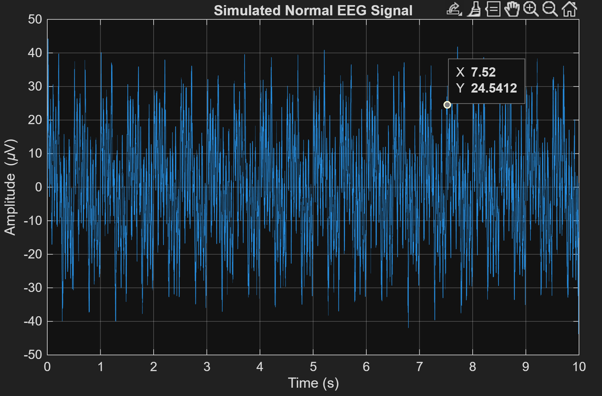
Demo
The video shows the EEG/EMG simulation in action. It provides context to each signal and how they can be modified or changed to mimic different conditions.
Gallery
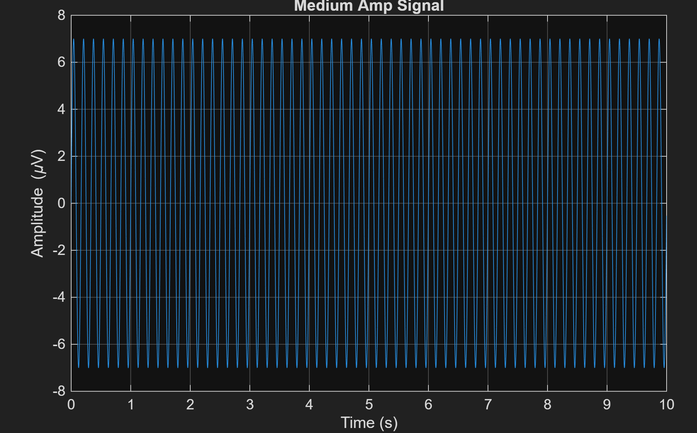
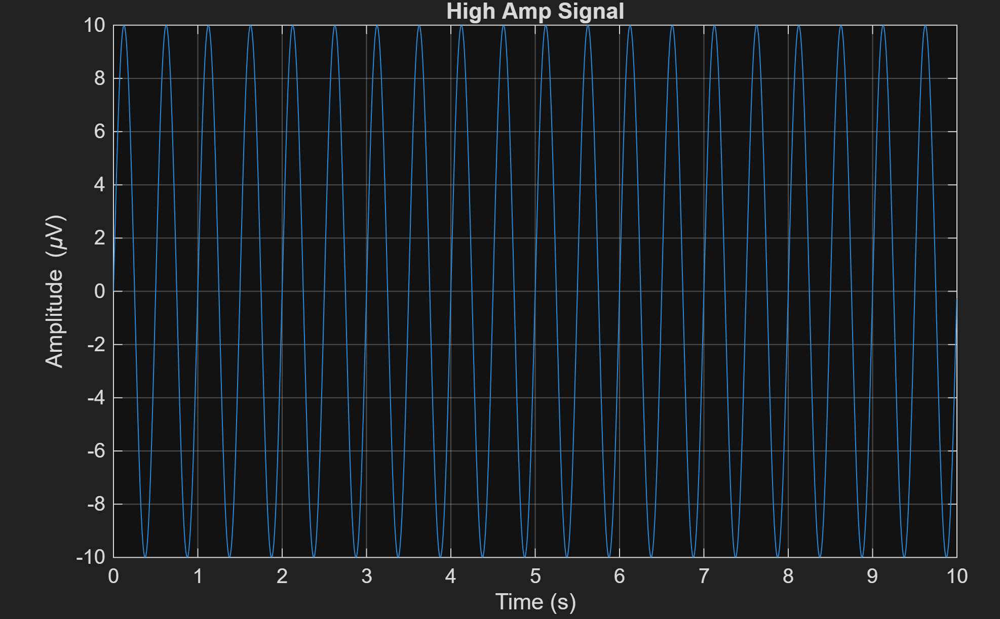
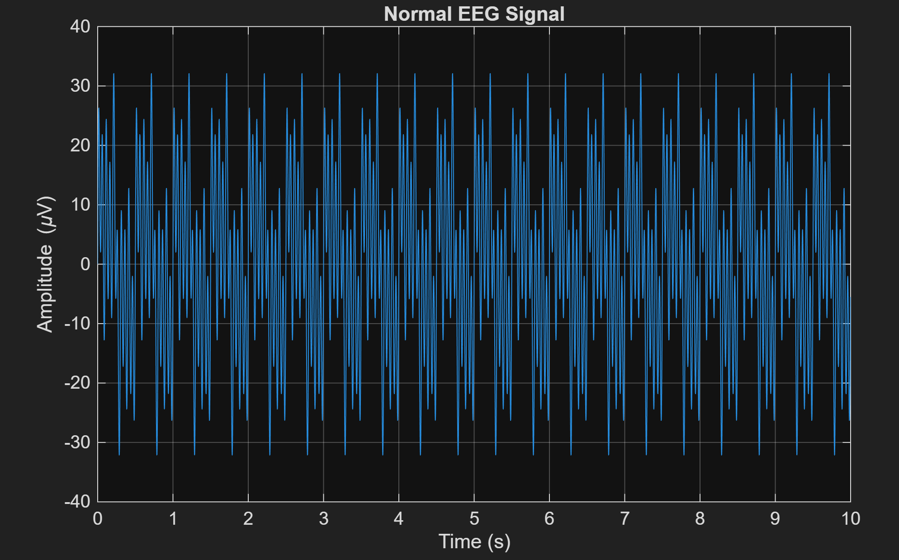
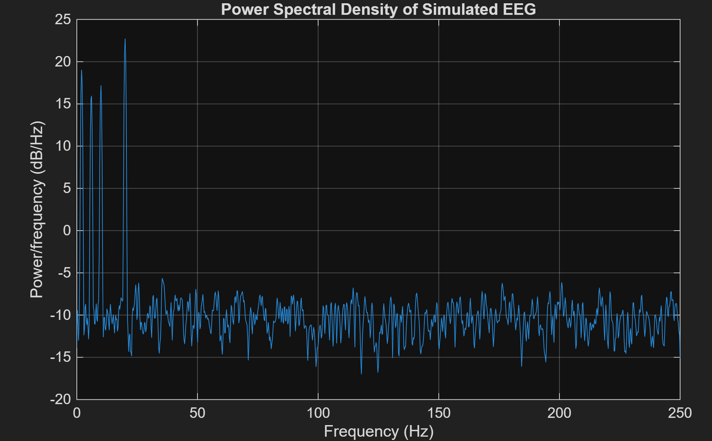
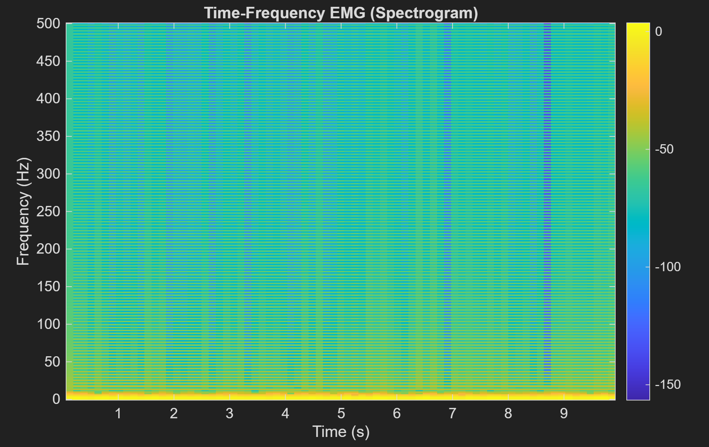
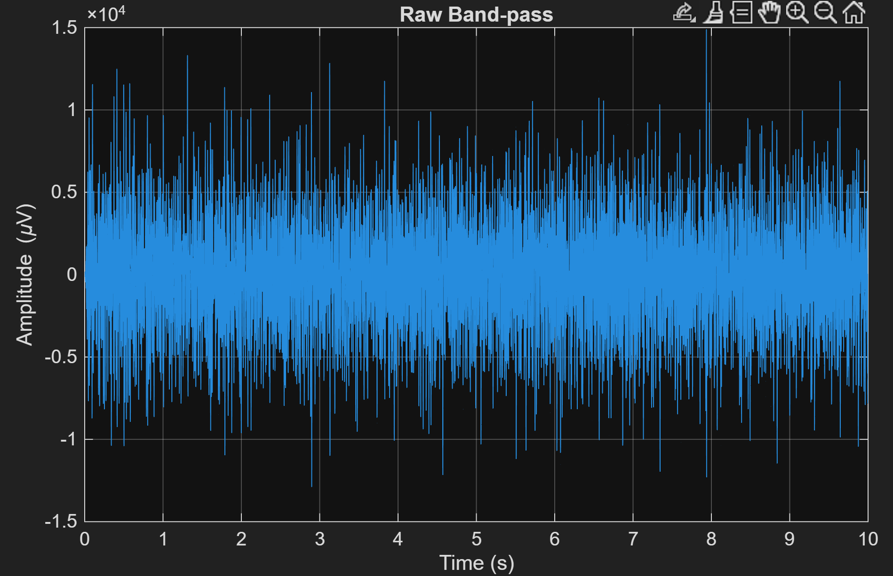
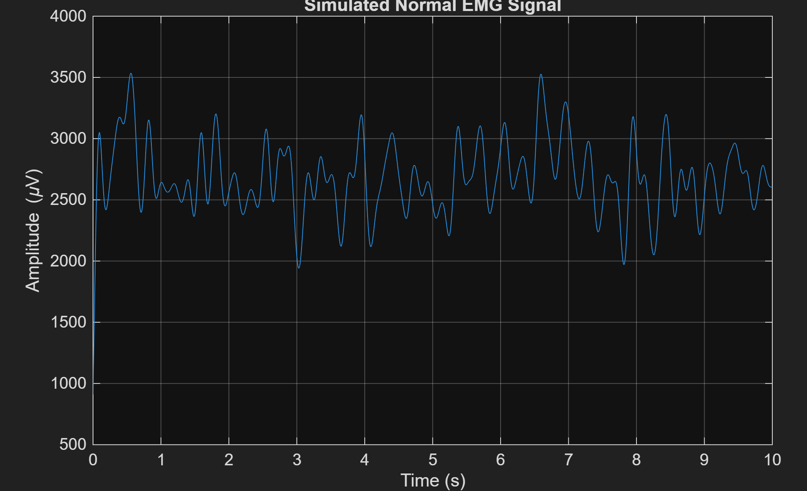
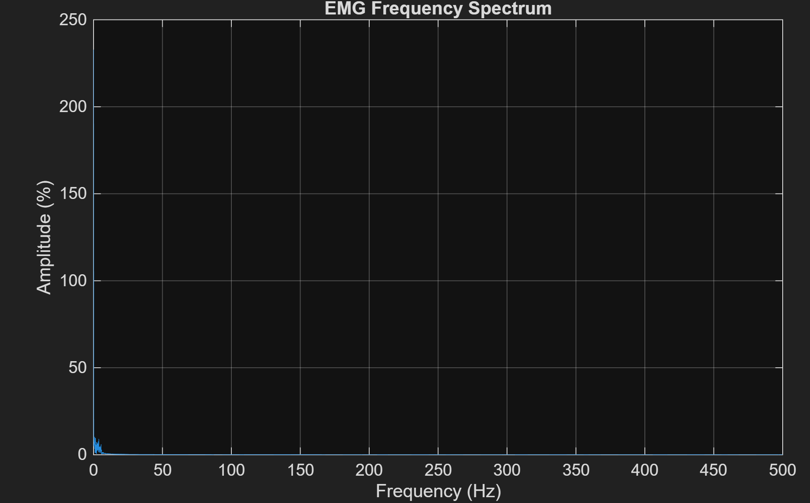
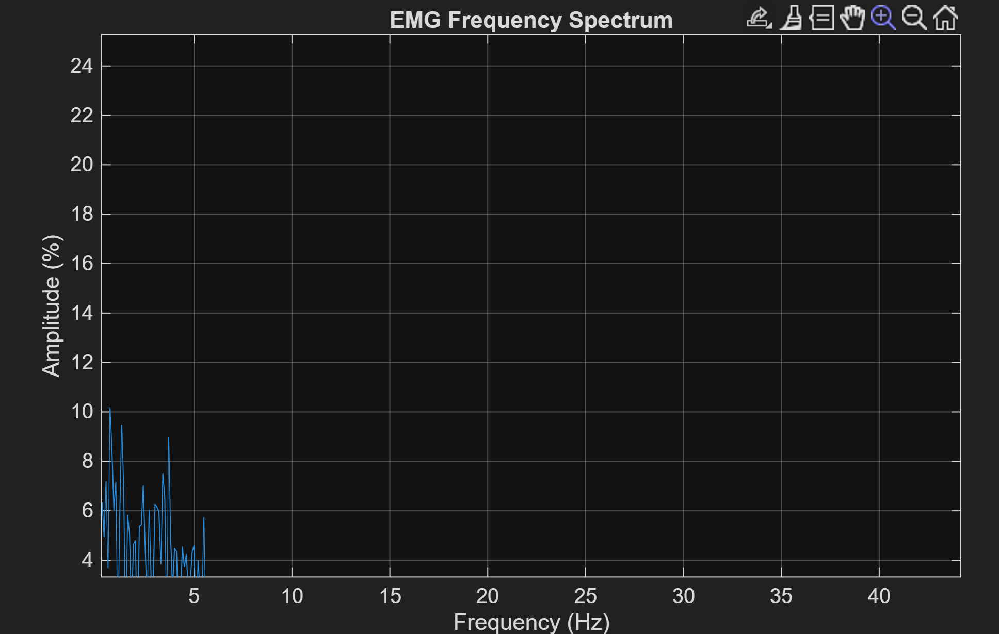
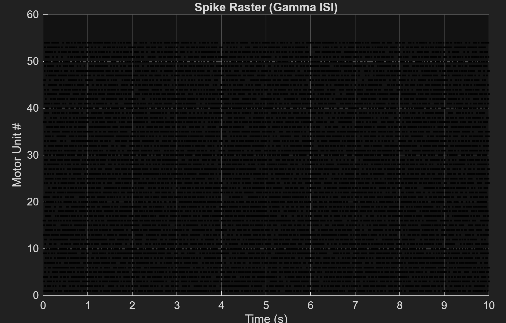